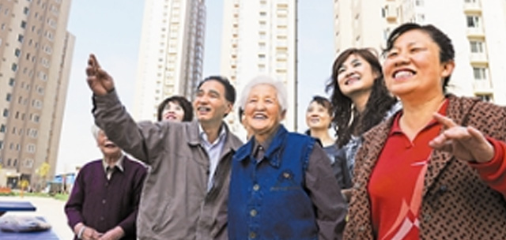

精准扶贫

民众生活感受保持较好
发布时间：2017-07-23 河北省中小企业社情民意平台于2017年5月进行了“全国城镇居民个人生活感受”民调， 这是自2012年以来开展的第4次追踪调查。本调查在全国（港澳台除外，下同）范围内， 随机抽取3000位城镇受访者进行电话访问。 本调查设置了个人生活质量、个人住房、个人工作（学习）、个人收入、社会福利与保障、个人诉求表达机会及个人发展机会共7个生活感受具体事项。 具体抽样、调查说明详见文后“调查与分析方法”。
一、生活基本需求事项民众多感满意
安居乐业是民众生活的基本需求，调查显示受访者对工作和住房的感受仍以满意为主。 其中，对“个人住房”，感到“满意”和“比较满意”的受访者比例合计为60%，在各事项中持续居首； “个人工作（学习）”满意度亦维持在四成以上，为42%。近年随着社会保障水平不断提升，民众对“社会福利与保障”多感满意， 满意度较2014年升了4个百分点至44%。对“个人收入水平”，民众满意度为36%，而感到“不满意”和“不太满意”的比例合计有22%， 高于其他事项。多感满意，满意度较2014年升了4个百分点至44%。对“个人收入水平”， 民众满意度为36%，而感到“不满意”和“不太满意”的比例合计有22%，高于其他事项。总的来看， 对“个人生活质量”感到满意的受访者超过半数，为57%。